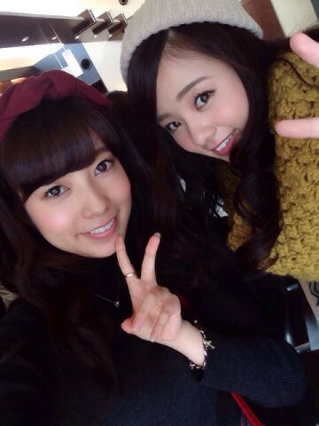
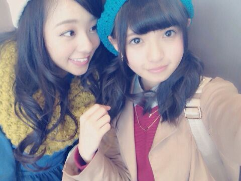

| 2014/11 15 Sat | 加藤ミリヤ×清水翔太 完 結 ファイナルのliveへ、 、、、まに |
皆 おはようさん\(*´−`*)/
ろってぃーだよ？ まにだよ？
ゆうりとぉ〜..*

昨日は１日NOGIBINGO!3デイだったよ.♪
あいかわらず楽しい収録でした..*
イジリーさんは一緒にお仕事すればするほど
いい人っていうのが伝わってきます^^
あっ！ キャラ設定壊れるかなあ (^-^)笑？
でも今週のアメトーク見ましたけど、
そこに居た芸人さん方 皆が
「先輩さすがですね〜*^^*」ってすごい慕っていたんで、
『ああ、やっぱり皆に本当に愛されてる人なんだなあ〜。』って思いました\^^/
、、、にしても〜
収録でずっと照明に当たってると眼球痛いね....。
お目目 冷やそう。へへ
ぢゃん。 あすかと。

そう。
この洋服と言えば〜、 のぎ天です!!!(・А・)
私達のご褒美ロケ旅〜鎌倉編〜が
一週目 配信されました〜..* 皆 見たかな〜？
皆 私服だし、いつもの素の私達が出てます 笑へへ
また飛鳥に「あいつアホだよ。アホ。アホ。」
って言われてたよ。。。 *^^*ははは
生意気な妹だ。 ウソウソ

大好きや..*
＿＿＿＿＿＿＿＿＿＿＿＿＿＿＿
一昨日、加藤ミリヤさんと清水翔太さんのライブに行ってきました！！！
本当に、感動したし勉強になったし最高に楽しかったです！
すごいいい刺激をもらいました.♪
やっぱり 自分は歌が好き！
ミリヤさんや翔太さんの様なかっこいい歌手にならなきゃ\(><)/
また行きたいです..*
じゃあ今日も自分らしく頑張ろうね〜*
今日のスケジュールは
眠気なんて吹っ飛ばして頑張らなくちゃ

大好きだよ。？
のし。
まひろ
コメント(359)
2014/11/15 11:48